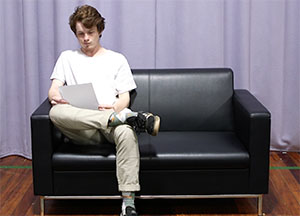

film

A film I directed, wrote and shot. The silent film is titled "The casting couch". This features a young man who through the process of waiting for his trial he gives up.
photography


about
I am a student studying at Massey University; specifically the COCA (College of creative arts)
contact
ADDRESS: 217 Taranaki Street
EMAIL: Kaceyhawken@hotmail.com